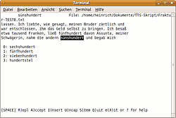

Hunspell
Dieser Artikel wurde für die folgenden Ubuntu-Versionen getestet:
Ubuntu 16.04 Xenial Xerus
Zum Verständnis dieses Artikels sind folgende Seiten hilfreich:
Hunspell  ist ein hoch entwickeltes Programm zur Rechtschreibüberprüfung, das z.B. in LibreOffice bzw. OpenOffice, Mozilla Firefox und Thunderbird (ab Version 3.x) sowie Opera zur Anwendung kommt. Hunspell ist die Weiterentwicklung von Myspell, dessen Wörterbücher weiterhin verwendet werden können. So ist die Überprüfung in einer Vielzahl von Sprachen möglich. Es können mehrere Wörterbücher als Grundlage genommen werden, außerdem lassen sich auch eigene Benutzerwörterbücher mit häufig benutzten Fachbegriffen etc. anlegen.
ist ein hoch entwickeltes Programm zur Rechtschreibüberprüfung, das z.B. in LibreOffice bzw. OpenOffice, Mozilla Firefox und Thunderbird (ab Version 3.x) sowie Opera zur Anwendung kommt. Hunspell ist die Weiterentwicklung von Myspell, dessen Wörterbücher weiterhin verwendet werden können. So ist die Überprüfung in einer Vielzahl von Sprachen möglich. Es können mehrere Wörterbücher als Grundlage genommen werden, außerdem lassen sich auch eigene Benutzerwörterbücher mit häufig benutzten Fachbegriffen etc. anlegen.
Installation¶
Installiert werden muss das Paket
hunspell
hunspell-tools (optional, für spezielle Aufgaben)
 mit apturl
mit apturl
Paketliste zum Kopieren:
sudo apt-get install hunspell hunspell-tools
sudo aptitude install hunspell hunspell-tools
sowie die gewünschten Wörterbücher.
Benutzung¶
 Hunspell ist ein Kommandozeilenwerkzeug[2], die allgemeine Syntax lautet
hunspell [OPTION(EN)]... [DATEI(EN)]...
Damit werden, ohne weitere Angaben, die angegebenen Textdatei(en) in der derzeit verwendeten Systemsprache überprüft, ohne Angabe einer Datei wird stdin (z.B. Eingabe im Terminal) verwendet. Dabei lassen sich auch mehrere Wörterbücher für die Überprüfung kombinieren, diese erfolgt interaktiv im Terminal. Als Eingabeformate sind .txt (verwendete Textkodierung kann angegeben werden), TeX/LaTeX- und HTML-Dateien möglich, die Korrektur wird direkt in den Dateien gespeichert.
Überprüfung einzelner Wörter¶
Einzelne Wörter lassen sich auf der Kommandozeile überprüfen. Dazu wird Hunspell (ggf. mit Optionen) gestartet, dann können einzelne Wörter eingegeben werden, bei falscher Schreibung werden die gefundenen Alternativen ausgegeben:
legastenika
Ausgabe:
& legastenika 4 0: Legastheniker, Legasthenie, Leierkasten, Legalisieren
Interaktiver Modus¶
Bei der Verwendung für Dateien wird jedes Wort, das nicht im Wörterbuch enthalten ist, auf der ersten Zeile im Editor angezeigt. Darunter erscheint ggf. der Textzusammenhang. Außerdem werden Vorschläge aus dem Wörterbuch mit vorangestellten Ziffern aufgelistet, wenn welche gefunden wurden. Das Wort kann so akzeptiert (und in das eigene Wörterbuch aufgenommen werden), durch ein vorgeschlagenes ersetzt, oder durch eine eigne Eingabe (auch mehrere Wörter) ersetzt werden. Das eigene Wörterbuch wird im Homeverzeichnis des Benutzers unter Verwendung der Spracheinstellung erstellt, also beispielsweise als ~/.hunspell_de_DE. Bei Einsatz mehrerer Wörterbücher wird das erste als Grundlage für die Erstellung verwendet.
| Interaktiver Modus von hunspell | |
| Taste(n) | Funktion |
| R | Das Wort komplett ersetzen |
| Das Wort dieses eine Mal akzeptieren | |
| A | Das Wort für die derzeitige Sitzung akzeptieren |
| I | Das Wort akzeptieren, und in das Benutzerwörterbuch aufnehmen |
| U | Das Wort akzeptieren und eine kleingeschriebene Version aufnehmen |
| S | Einen Stamm, und entsprechende Beispielwörter erfragen, und aufnehmen. Der Stamm wird auch mit den Affixen der Beispielwörter akzeptiert |
| 0 , 1 , 2 ... | Ersetzung mit einem der vorgeschlagenen Wörter |
| X | Prüfung abbrechen, und nächste Datei bearbeiten (falls vorhanden) |
| Q | Sofort abbrechen; Bestätigung mit y erforderlich, Datei bleibt unverändert |
| Strg + Z | Programm pausieren, Wiederaufnahme mit fg-Befehl |
?, also
⇧ +
ß | Anzeigen der Hilfe |
Beispiele¶
hunspell -d en_US file.txt # interaktive Korrektur einer Datei hunspell -l file.txt # gibt falsch geschriebene/nicht erkannte Wörter aus hunspell -i utf-8 file.txt # verwendet UTF-8 als Eingabeformat
Optionen¶
| Hunspell-Optionen | |
| Option | Funktion |
-1 | Nur das erste Feld in jeder Zeile überprüfen (Separator = Tabulator) |
-a | Verwendet Ispells "pipe interface" |
--check-url | Überprüft URLs, E-Mail-Adressen und Verzeichnispfade |
-d d[,d2,...] | Verwendet Wörterbuch d (d2 etc.), z.B. -d de_DE,de_med, mehrere Angaben ohne Leerzeichen nur durch Komma trennen |
-D | Listet die verfügbaren Wörterbücher auf |
-G | Gibt nur korrekte Wörter oder Zeilen aus |
-h, --help | Aufruf der Hilfe |
-H | HTML als Eingabeformat |
-i enc | Enkodierung der Eingabedatei (z.B. UTF-8) |
-l | Gibt die nicht erkannten Wörter aus |
-L | Gibt die Zeilen mit nicht erkannten Wörtern aus |
-m | Analysiert die Wörter des Eingabetextes |
-n | nroff/troff als Eingabedateiformat |
-p dict | Angabe eines eigenen Wörterbuches |
-P password | Password für verschlüsselte Wörterbücher verwenden |
-s | Bilde Stämme zu den Wörtern der Eingabe |
-t | TeX/LaTeX als Eingabedateiformat |
-v, --version | Ausgabe der Versionsnummer |
-vv | Ausgabe der ispell-kompatiblen Versionsnummer |
-w | Gibt nicht erkannte Wörter/Zeilen z.B. von Wörterbuchdateien (ein Wort = eine Zeile) aus |
Weiteres in der Manpage des Programms, oder der Dokumentation .
GtkSpell¶
GtkSpell ist eine Erweiterung für GTK-Anwendungen, mit der eine Rechtschreibprüfung mit Hunspell/Myspell-Wörterbücher über ein Kontextmenü (Aufruf per  -Klick) durchgeführt werden kann. Dazu muss das Paket
-Klick) durchgeführt werden kann. Dazu muss das Paket
libgtkspell0
mit apturl
Paketliste zum Kopieren:
sudo apt-get install libgtkspell0
sudo aptitude install libgtkspell0
installiert sein, je nach Programmier-Sprache der Anwendung auch python-gtkspell oder libgtk2-spell-perl. Im Kontextmenü lassen sich als falsch erkannte Wörter anklicken, und eine Alternative auswählen oder das Wort zum aktuellen Benutzerwörterbuch hinzufügen. Evolution und Firefox verwendet z.B. diese Methode der Rechtschreibprüfung.
Sonderfälle¶
Alte deutsche Rechtschreibung¶
Für Hunspell kann auch die alte deutsche Rechtschreibung als Sprache verwendet werden, über das Paket myspell-de-de-oldspell, sinnvoll, wenn man z.B. nach alter Version erstellte Texte einscannt und das OCR-Ergebnis überprüfen möchte. Allerdings ist das Paket nicht mit den neuen Versionen kompatibel (weder mit hunspell-de-de noch myspell-de-de), sie schließen sich gegenseitig aus. Mit einem kleinen Trick kann man allerdings beide Versionen nebeneinander verwenden, indem man zunächst die alte Version installiert, und die Dateien /usr/share/hunspell/de_DE.dic und de_DE.aff umbenennt (z.B. in de_old.dic und de_old.aff, der Name muss der selbe sein!) und in /usr/share/myspell/dicts die entsprechenden symbolischen Verknüpfungen auf die umbenannten Hunspell-Dateien erstellt. Danach kann man das neue Sprachpaket installieren, bei der Sprachwahl kann aber jetzt weiterhin auf de_old zurückgegriffen werden.
de_med¶
Das medizinische Wörterbuch hunspell-de-med lässt sich nicht alleine verwenden, es muss mit einem anderen Lexikon verwendet werden, und kann auch nur als zweites Lexikon angebenen werden. Ansonsten startet die Rechtschreibprüfung nicht; eventuell aufgenommene Termini werden entsprechend auch nicht als .hunspell_de_med, sondern im "vorgeschalteten" Wörterbuch aufgenommen.
"frami"-Versionen¶
Für die deutschsprachigen Wörterbücher existieren von Franz Michael (frami) Baumann bearbeitete Versionen, die einen "aktuelleren" Wortschatz umfassen. Diese Pakete schließen sich allerdings mit den Standardpaketen aus, ggf. ist eine parallele Verwendung aber wie oben beschrieben möglich. Außerdem wird bei Installation das Meta-Paket language-support-writing-de entfernt.
 Übersichtsartikel
Übersichtsartikel- Erstellt mit Inyoka
-
 2004 – 2017 ubuntuusers.de • Einige Rechte vorbehalten
2004 – 2017 ubuntuusers.de • Einige Rechte vorbehalten
Lizenz • Kontakt • Datenschutz • Impressum • Serverstatus -
Serverhousing gespendet von